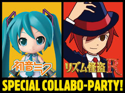
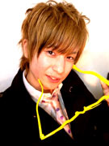
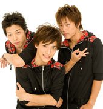

『初音ミク and Future Stars Project mirai』×『リズム怪盗R 皇帝ナポレオンの遺産』
セガの大人気リズムゲームが贈るスペシャル番組の放送が決定！

2012年3月8日に発売予定のニンテンドー3DS™用ソフト『初音ミク and Future Stars Project mirai』（以下、『初音ミク Project mirai』）と、現在好評発売中の『リズム怪盗R 皇帝ナポレオンの遺産』（以下、『リズム怪盗R』）のコラボレーション番組「初音ミク and Future Stars Project mirai × リズム怪盗R セガ 大人気リズムゲーム・スペシャルコラボパーティー！」を、3月7日（水）にニコニコ動画にて生放送することが決定いたしました。
「初音ミク and Future Stars Project mirai × リズム怪盗R セガ 大人気リズムゲーム・スペシャルコラボパーティー！」は、『初音ミク Project mirai』と『リズム怪盗R』の魅力を余すところ無く詰め込んだ特別番組となっております。
番組MCに"百花繚乱さん"を迎え、ダンスグループ「DANCEROID」の"いとくとらさん"と"まぁむさん"、"miumeさん"、"めろちんさん"、"KoRocK"らによる、 2タイトルの楽曲を用いた「生で踊ってみた」コーナーを実演。 また、『リズム怪盗R』の楽曲を手がけた"大谷智哉"と"幡谷尚史"が、「H.」でお馴染みの"光吉猛修"をゲストヴォーカルに招いてお送りする「生で歌って弾いてみた」コーナーなど、両タイトルの＜音楽＞を十分にお楽しみいただける内容でお送りします。
さらに、スペシャルゲストとして"藤田咲さん"と、怪盗R役の"細谷佳正さん"の出演も決定！ ゲーム開発陣も登場するトークコーナーや、豪華賞品の当たるスペシャルプレゼント企画などで番組を盛り上げます。
夢のコラボレーションが実現した一夜限りの特別番組となっておりますので、どうぞお見逃しなく！
| 名称 | 初音ミク and Future Stars Project mirai × リズム怪盗R セガ 大人気リズムゲーム・スペシャルコラボパーティー！ |
|---|---|
| 放送日程 | 2012年3月7日（水） 21：30～23：00 |
| URL | http://live.nicovideo.jp/watch/lv83299021 |
出演者（予定）
百花繚乱（ひゃっかりょうらん）
ニコニコユーザー生放送にて女装をはじめとする体当たり放送を行いその名を知られる。現在はニコニコ公式放送『ニコラジ』のアシスタント、テレビ東京ドリームクリエイターをはじめとする様々なメディアで司会者としての活動を中心に行っている。
藤田咲（ふじたさき）

TVアニメやゲームの声などを中心に活躍する声優。代表作作品は『バトルスピリッツ覇王』の巽キマリ役や『WORKING！！』、『VOCALOID 2 キャラクター・ボーカル・シリーズ０１「初音ミク」』 など。
細谷佳正（ほそやよしまさ）
TVアニメはもちろん、海外ドラマや洋画の吹き替えから、ゲームの声まで幅広いフィールドで活躍する声優。『テニスの王子様 Original Video Animation 全国大会篇』『刀語』『ちはやふる』『新テニスの王子様』など様々な作品に出演。文化放送のラジオ番組「細谷佳正・増田俊樹の全力男子」（毎週日曜日22:30～23:00）も好評放送中。
いとくとら（DANCEROID）
1989年8月28日生まれ。DANCEROIDのリーダーを務める。小学生の頃からダンス、クラシックバレイを習い始め、バレエの全国コンクールで入選の経験もある。ダンス以外にもモデル、デザイナーとして活動の幅を広げており、ブログアクセス数が1週間10万PVを超えることもある。
まぁむ（DANCEROID）
1989年12月9日生まれ。DANCEROIDのメンバーとして活躍中。おっちょこちょいキャラでDANCEROIDのムードメーカー的ポジション。高学歴。
miume（みうめ）
12月20日生まれ。「TEAM純情」のメンバーとして活躍中。4/28、4/29に開催される「ニコニコ超パーティー」への出演が決定。特技は腕相撲。
めろちん

2010年にハッピーシンセサイザ踊ってみたを初投稿。以降、動画投稿やイベント出演等で活動中。
KoRocK

中京テレビが制作する深夜のダンスバラエティ番組「スーパーチャンプル」にレコメンドダンサーとして紹介され、以来番組中のショーケースにも数多く出演。2008年4月～6月のマンスリーダンサーランキングでは3ヶ月連続1位を独走し、第2代殿堂入りダンサーの称号を獲得。泰智、J、いっとんの3人のダンスチーム。